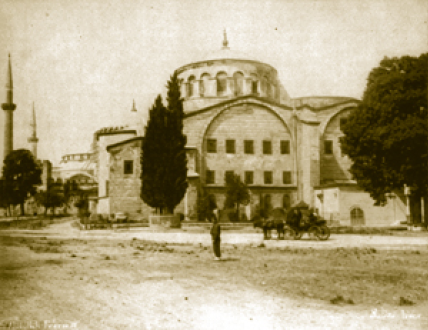
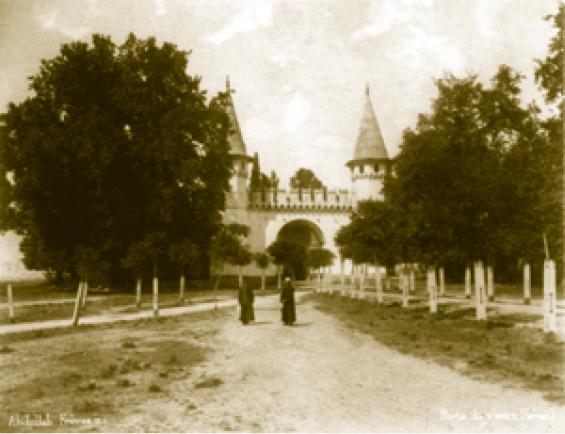
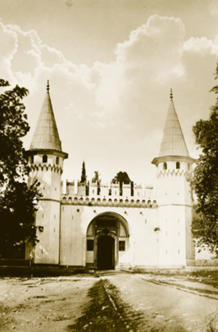

SARAYIN BÖLÜMLERİ
BÂB-I HÜMÂYÛN VE BİRİNCİ AVLU
Topkapı Sarayı temelde Bîrun, Enderun ve Harem olmak üzere üç teşkilattan müteşekkildir. Sarayın oturum planı, saray merasimleri, saray mekânları bu teşkilata göre düzenlenmiştir. Topkapı Sarayı; Bâb-ı Hümâyûn, Bâbü’s selam ve Bâbü’s saade adlı üç ana kapı, dört avlu, Harem, Hasbahçe (Gülhâne) ve bahçelerden oluşur. Üç tarafı denizle çevrili olan sarayı 1400 metre uzunluğunda “Sur-ı Sultani” denilen yüksek ihata duvarları çevreler.
Bâb-ı Hümâyûn
Fatih devrinde yapılan bu kapının üzerinde Ali b. Müridi’s Sûfi tarafından yazılan kitabede “Bu mübarek kale, Allah’ın desteği ve rızası üzerine, güvenliği sağlamak maksadıyla, Sultan Mehmed Han’ın oğlu Sultan Murad’ın oğlu, karaların padişahı ve denizlerin hakanı, insanların ve cinlerin üzerinde Allah’ın gölgesi, Doğu’da ve Batı’da Allah’ın yardımcısı, su ve toprağın kahramanı, Konstantiniyye’nin fatihi ve fethin babası olan Sultan Mehmed Han’ın -Allah Teâla onun hükümdarlığını ebedi kılsın ve mekânını kutup yıldızlarından yüksek eylesin- emriyle, (Hicri) 883 yılının mübarek ramazan ayında (Kasım 1478) imar ve inşa edildi.” ifadesi yer alır.
Bâb-ı Hümâyûn üzerinde müsenna (karşılıklı) yazı ile Hicr Sûresi’nin 45–48. ayetleri yazılıdır. Hat sanatı ve saltanat kavramı bakımından son derece anlamlıdır. Kapının diğer yüzünde Abdülaziz’in tuğrasının üzerinde Saff Sûresi’nin 13. ayeti “Nasrun minallahi ve fethün kârîb ve beşşiril mü’minin [Ya Muhammed]” (Allah’tan bir yardım ve yakında gerçekleşecek bir zafer! Mü’minlere bunları müjdele. [Ya Muhammed]) ifadesi yazılıdır. Bu ifade, aynı zamanda mehter takımının hücumdan evvel okuduğu ayettir.
Osmanlı döneminde hemen hemen her yapının üzerinde bu şekilde bir kitabe bulunurken günümüzde bu gelenek neredeyse terk edilmiştir.
Sarayın müze olarak kullanıldığı dönemlerde bu kapıdan turist otobüslerinin dahi geçtiği ve kapıyı ne kadar yıprattıkları malûmdur. Bu uygulamaya 2006’da son verilmiştir. Saraya girecek olan diğer Osmanlı tebaası bugün Gülhâne Parkı’ndan saraya girilen Soğukçeşme Kapısı’ndan (Bâb-ı Sultani) girebilirdi. Bâb-ı Hümâyûn saraya at ile girilebilen tek kapıdır. Bâbü’s selam’dan ise sadece padişah atla girebilirdi.
Bâb-ı Hümâyûn, padişahların Ayasofya’da namaz kıldıkları bölüm olan Hünkâr Mahfili’nin girişinin tam karşısındadır. Padişahlar cuma, teravih ve bayram namazlarını Ayasofya’da kılacakları vakit bu kapıyı kullanırlardı, diğer vakit namazlarını ise saraydaki camilerde kılarlardı.
Çeşitli dönemlerde tadilat gören kapının üzerinde eski gravürlerde bir köşk bulunduğu görülmektedir. Bu köşk bir yangında kül olmuş ve günümüze ulaşamamıştır.

Birinci Avlu‘da bir zamanlar silah müzesi olarak kullanılan Saint İrene Kilisesi
Birinci Avlu (Alay Meydanı)
Birinci Avlu’ya Bâb-ı Hümâyûn adı verilen ve daimi surette nöbet tutulan abidevi kapıdan girilir. Bu kapıdan itibaren saray alanı başlar. Bununla beraber bu kapıdan girmek o kadar zor değildir. Sarayda işleri olanlar, ziyaret edeceği yakınları bulunanlar, buraya bir iki soruşturma ve ısmarlamayla gayet rahat girerler, içeride çalışan yakınlarıyla görüşürler veya sarayın ilgili bürolarıyla olan işlerini görmek için toplaşırlardı. Ayrıca ilk avluda bulunan ve bugün artık kaybolan Deavi Köşkü -ki halkın arzuhâllerinin verildiği yerdi- bu gibi ziyaret ve müracaatların kolaylaştırılması için bir sebepti.
Deavi Köşkü’nde ilgili personel, Kubbealtı vüzerasından birinin gözetimi altında çalışırdı. Buradan alınan dilekçeler tarihçiler için çok önemli bir kaynaktır. Maalesef bunların çoğu elimizde mevcut değildir. Bâb-ı Hümâyûn’un girişinde, bu ilk avluda bugün Saint İrene Kilisesi, Darphâne denilen eski saray atölyeleri yer alıyor. Eski saray atölyeleri, Roma İmparatorluklarından beri devam edegelen bir ananeyi yansıtır. Buralarda sarayın marangozluk, kitap ciltleme, kitapların tezhibi, deri işleri gibi ince işçilikleri yanında; dış devletlere gönderilecek hediyeler de hazırlanırdı. Bu avludaki hünerveran atölyesi 19. yüzyılda saray terk edilince devletin sikkelerinin basıldığı darbhâneye çevrilmiştir ve şu anda da bu ismi taşıyan, sarayın kontrolü dışında olan bir bölgedir. Burada bazı devlet ofisleri yer almaktadır.

Birinci Avlu’nun (Alay Meydanı) bir asır evvelki görünüşü
Saint İrene Kilisesi ise önce sarayın silah deposuyken Fethi Ahmed Paşa zamanında bir arkeoloji müzesine, o müzenin 1894’te bugünkü binasına taşınmasının ardından da bir askerî müzeye çevrilmiştir. Bugün yıllık müzik festivallerinin yer aldığı önemli bir bina konumundadır.
Birinci avlunun en ilginç köşelerinden biri de Cellat Çeşmesi’dir. Bâbü’s selam’dan girmeden evvel sağ tarafta bu yapıyı görüyoruz. Edirne Sarayı’nda genellikle istida için ve idam edilenlerin teşhiri için bir yer bulunduğu hâlde burada o görülmez. Sarayın odunlukları da yine bu bölgede yer alırdı.

Bâbü’s selam (Yaklaşık 1900)